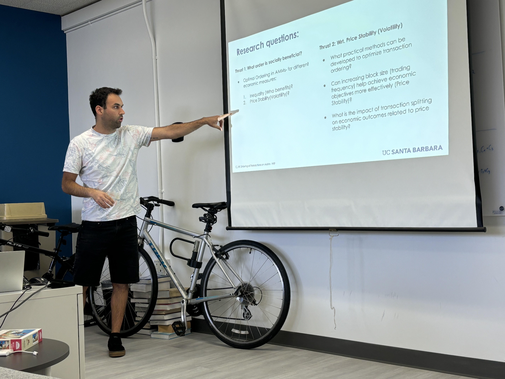

UCSB
Fftech Research Lab
Our Research Tracks
Headed by Professor Dahlia Malkhi, the Foundations of Financial Technology (“fftech”) Lab carries research along two principal tracks: distributed systems and decentralized finance.
The first track develops systems for decentralized, hybrid off-blockchain / on-blockchain shared state. Our work focuses on off-chain infrastructure for shared state, for layer-2 interoperability, for serving client RPC from high-throughput blockchains, and for data analytics. Through enhances to off-chain infrastructure, we aim to enable composability across the Web3 world, both on and off blockchains.
The second track revolves around the intersection between decentralized finance (DeFi) and society. Our work examines economic markets, law & regulation, and mechanism design. We look at un-obvious macro-economic measures in DeFi, including price stability and wealth equality. We also aim to scale payment rails and improve liquidity management.
Liquidity Management in Crypto Payments and DeFi

The rapid growth of blockchain adoption in payments and Decentralized Finance (DeFi) platforms has shifted the primary bottleneck from transaction throughput to liquidity management. Off-chain scaling techniques (e.g., payment channels and rollups) increase throughput but fragment liquidity, creating new challenges: in payment channel networks like Bitcoin’s Lightning, multi-hop transfers can fail if any intermediate channel lacks sufficient capacity; and multiple isolated liquidity pools across L-2s force capital to be spread thin, increasing slippage and degrading user experience
The Fftech lab explores liquidity challenges and mitigation techniques as they arise in different settings. For example, in the context of automated market makers, the CLVR protocol examines how the sequencing of trades within a block directly impacts slippage-induced failures and the availability of pool liquidity. CLVR’s core insight—that minimizing intra-block price volatility through strategic ordering can substantially reduce slippage-induced failure rates—reveals a feedback loop in which execution failures erode liquidity, which in turn amplifies the likelihood of future failures.
Secure Computation on Satellites

What if you can run workloads in space?? 🤔 Satellites carrying purpose-built "payloads", compute devices which are configured and constructed by clients on Earth, are becoming commoditized by companies like Blue Origin, SpaceX, Planet, and others. They push security to new horizons: Compute hardware on satellites is essentially impenetrable, it does not hinge on a single manufacturer, it is immune to side-channel attacks, and is virtually tamper-proof. This project explores an exciting new dimension for utilizing satellites: secure computing platforms. In a joint bluepaper with SpaceComputer IO: Orbital Root of Trust, we shared a preliminary vision and architecture of a secure orbital compute platform. We continue to work along various research tracks on enhancing the security and performance of computations in orbit.